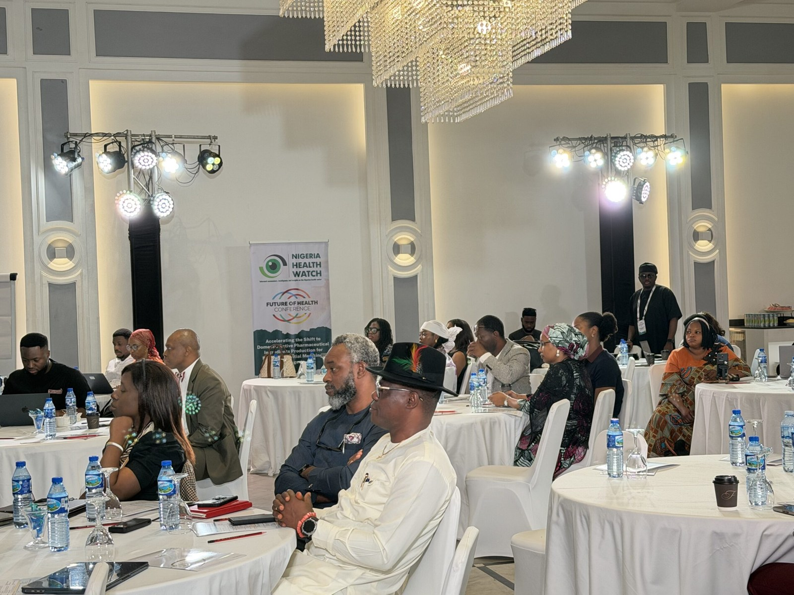

Stakeholders warn Nigeria’s reliance on imported drug ingredients threatens medicine security

Nigeria’s reliance on imported active pharmaceutical ingredients (APIs) could leave the country vulnerable to global supply disruptions, trade restrictions and price volatility, stakeholders warned at a meeting in Abuja on Friday. The gathering, organised by Nigeria Health Watch and the World Bank Group, focused on accelerating domestic production of ingredients for priority essential medicines.
Olumide Okunola of the World Bank Group said many Nigerian manufacturers produce finished medicines but depend on imported APIs and other raw materials. The COVID-19 pandemic illustrated how international supply-chain disruptions can affect countries reliant on imported medicines and pharmaceutical inputs. He said Nigeria need not produce every ingredient locally, but should identify essential APIs that can feasibly be made in the country to secure a minimum domestic supply. Inadequate infrastructure, unreliable electricity, limited financing and regulatory bottlenecks remain barriers, he added.
Chris Isokpunwu, permanent secretary of the Federal Ministry of Industry, Trade and Investment, said domestic production could improve supply-chain resilience, reduce exposure to foreign exchange pressures, create skilled jobs and retain more economic value in Nigeria. He cautioned that local production should not come at the expense of quality, efficiency or affordability, and called for a roadmap setting out priority ingredients, investment and infrastructure needs, incentives, regulation and responsible institutions. He also said the African Continental Free Trade Area could open regional markets to Nigerian manufacturers.
Abdu Mukhtar, national coordinator of the Presidential Initiative for Unlocking the Healthcare Value Chain, said the initiative was working with manufacturers to prioritise APIs based on public health needs. Represented by Zara Abba-Aji, he also described work with the Nigeria Sovereign Investment Authority on excipient manufacturing and efforts to improve access to finance and technical expertise. The initiative’s MediPool pooled procurement platform is intended to stimulate demand for locally made medicines, he said.
Nigeria Health Watch managing director Vivianne Ihekweazu said the meeting brought government, manufacturers, investors and development partners together to address policy, regulatory and investment barriers. She also raised concern about slow implementation of the federal executive order intended to increase local production of healthcare products. The government has set a target of producing at least 70 per cent of essential healthcare products locally by 2030 and has announced incentives and financing commitments to support domestic manufacturing.
Source: Premium Times